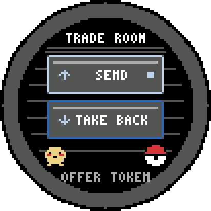
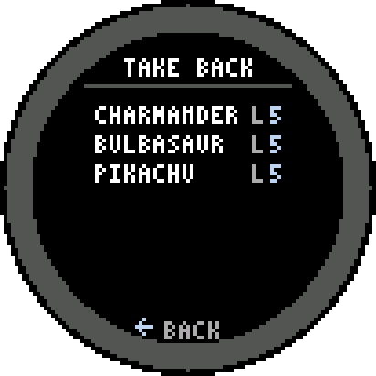
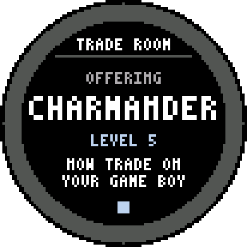

Project · Wearable
Pokewalker
A real version of the pedometer toy that shipped with HeartGold and SoulSilver — except this one trades with a Game Boy over an actual link cable, not infrared to a DS. It runs on a round 412×412 touchscreen, walks a team of up to six Pokémon on a real step count, and puts one of them on the table for a genuine Generation 1 trade: SEND hands over the device's own stand-in token, TAKE BACK gives up a real team member and takes back whatever the game offers for it. The wire protocol is checked byte-for-byte against a cartridge-verified reference before it ever gets near a cable — 900,000 bytes across 300 independent sessions, all agreeing.
Try it in your browser: the walker's own software, compiled to WebAssembly, with two creatures of its own and a button to load a folder of your sprites.

pw-link's
own fuzzer checks itself against — a cartridge-verified Generation 1 partner,
not an approximation of one.
What it does
Everything here is built and running on the device.
The trade
SEND and TAKE BACK, over a real link cable
- SEND: the device offers a hand-built level 5 Pikachu token; the Game Boy hands over whichever of its own Pokémon it likes at the trade table
- TAKE BACK: choose any of the walker's own team to give away; it leaves the team for good, and whatever the Game Boy player gives up for it is released rather than kept
- A team member has no cartridge-format bytes of its own to send, so
trade::giveaway_monbuilds one fresh from its species and level, wearing the token's own stats and moves as a stand-in — a plausible Pokémon on the wire, not a numerically exact one - The Trade Room's own rim breathes through the ball's four-tone blue while a game is on the cable, dithered rather than a flat fill — the same technique the closed ball's own centre-button glow already used
The protocol
Checked against a real cartridge before it ever ships
pw-linkis the device's own Generation 1 trade partner, a clean-room implementation of the exchange a real cartridge runs- An oracle test feeds identical bytes to it and to a plugin verified against a real Pokémon Blue, and every single answer has to match — whole scripted sessions, then 300 runs of 3,000 fuzzed bytes each
- All 900,000 fuzzed bytes agree, byte for byte, including the phase each side ends up in and the party each side is shown
pw_link::wire::unpatchbounds-checks the patch-list offset a trade's$FEbytes travel through against the whole party block; a companion probe sends a protocol-legal stream with two out-of-range entries to check whether a real cartridge does the same
The pet
A team, a step count, three minigames
- A closed ball that turns like one in your hand, an open face that walks a leading Pokémon on the real step count, and a team of up to six with its own carousel
- Poké Radar and the Dowsing Machine, ported from the original
device's own
picowalker-corereference with the source lines cited; a Slots minigame this project added itself, and says so - A 3-slot inventory for what the Dowsing Machine finds, and a dex store that loads any of the 251 species from flash with its own animation and cry
- Settings, the Watt purse and the step counter all cross a power cycle by being handed back at boot — there is no EEPROM model, only a host that remembers
Sound and radio
A real sound chip, not sampled audio
- A
no_stdsound chip and track player inpw-petitself — chip notes, not recordings, so a minute of music costs kilobytes rather than megabytes - All 44 tracks the original device's radio carries, every looping Blue song and Yellow's own extras, played from the chip
- The Surfing Pikachu theme and the Game Corner music are chip notes too, transcribed from the cartridge's own sound engine
- Favourites star a track to the front of the radio list and survive a reboot in the same settings record everything else does
The board
One real target, chosen on purpose
- Waveshare ESP32-S3-Touch-LCD-1.46B: a round 412×412 touch IPS panel, two side keys, an onboard IMU for the step count
- Firmware is
no_std,forbid(unsafe_code), zero dependencies in the pet logic itself — everything hardware-facing stays in its own driver crate - The device's own Poké Ball is drawn on the round glass rather than moulded — a lit sphere in the enclosure's own paint, shaded rather than photographed
- A desktop simulator (
pw-pet-window) runs the sameAppthe device does, live in a window, for every screen shown on this page


TAKE BACK lists the whole team

A choice made, ready for the cable
Choosing CHARMANDER here commits it to the wire and removes it from the team the moment the trade completes — the same finality a real trade has.
What it's built of
| Crate | Lines | What it is |
|---|---|---|
pw-pet | 42,126 | The pet itself — no_std, every screen, the walk, the trade room, the minigames, the sound chip |
pw-pet-window | 7,656 | Desktop simulator: the same App, live in a window, with recording and scripting |
pw-pet-firmware | 4,271 | The device build — xtensa-esp32s3-none-elf, its own toolchain and linker script |
pw-link | 1,581 | The Generation 1 trade partner, checked against the real one |
pw-spd2010 / pw-sh8601 | 3,134 | Two panel drivers — a real QSPI driver plus a software model, on the same terms, one crate each |
Where it stands
- The physical link port has no driver yet. Four GPIOs are wired and named for the Game Boy's clock, in, out and cable-present sense, but nothing bit-bangs the real serial protocol against them — every trade checked so far is software talking to software, over TCP, not yet over an actual cable to an actual console.
-
A given-away Pokémon is a stand-in, not an exact one.
giveaway_monhas no per-species base-stat table, so the species and level are real but the combat stats, DVs and moves are the token's own — a deliberate simplification, not a bug. -
The Xtensa Rust backend is fragile at this code's current size. A
handful of arithmetic patterns — a signed value that lands on exactly
-4096, or a plain.abs()— have made the compiler's own instruction selector give up outright. Both known instances are worked around; a large enough further addition could find another.
Milestones
Pet mode, and the moonwalk
One of your Pokémon moves into the Gold bedroom as its HeartGold follower sprite: fed, rubbed, visited by the rest of the team, dancing to the radio. A bug made it moonwalk away from a friend; now every song ends that way. Read it →
TAKE BACK offers any team member, and the ring breathes
TAKE BACK's list used to need a Pokémon specifically tracked as link-received, which a real team of ordinary Pokémon never has — it always read "nothing kept". It now lists the whole team and builds a wire Pokémon fresh for whichever one is chosen. The trade ring stopped being a flat fill at the same time: it breathes through the ball's own four tones, dithered rather than stepped.
A Generation 1 trade partner, checked against the real one
pw-link landed with an oracle test beside it: the same bytes,
in the same order, fed to this implementation and to a plugin verified
against a real Pokémon Blue cartridge, with every answer required to
match. It still does, all 900,000 fuzzed bytes of it.
The build target becomes the Waveshare board
The active hardware target moved to the Waveshare ESP32-S3-Touch-LCD-1.46B — a round 412×412 touch panel bought in rather than machined, with the Poké Ball drawn on the glass instead of moulded round it.
The pet software becomes this project's own, in Rust
The earlier C reference core was a licence-encumbered dependency to check against, not a foundation. The software this project ships from here is its own, written from nothing, in Rust.
The infrared had to go
The original hardware line: deleting the Pokéwalker's IrDA transceiver for a six-pin Game Boy link interface, and machining a steel Poké Ball to put it in. Superseded by the Waveshare pivot above, but the interface work — a 74LVC2G17 and five resistors doing the whole job — carries over in spirit. Read it →
The first commit
KiCad hardware for a real Pokéwalker, on a forked RP2350 board.
Writing
-
The moonwalk was a bug
The Pokewalker is growing a virtual pet: one of your Pokémon in the Gold bedroom, fed, rubbed and visited by its friends. Then a friend turned up mid-dance and the pet walked off backwards. It stayed.
-
The infrared had to go
A 74LVC2G17 where the infrared transceiver was, and a ⌀70 steel ball to put it in. The shell weighs 86.1 g, the Poké Ball look turns out to be paint, and the USB-C plug cannot reach its socket.
Where these numbers come from
Line counts are find src -name '*.rs' | xargs wc -l per crate, in
the repository. The test count is every host-runnable suite in the workspace
passing together. The 900,000-byte figure is pw-link-oracle's own
fuzz test, 300 runs of 3,000 bytes each, checked against
terminalgb-plugin-gen1-link — TerminalGB's own Generation 1 link
plugin, independently verified against a real Pokémon Blue cartridge. The
Trade Room screens are real captures, rendered by the desktop simulator's own
renderer — the same code the device runs — not mocked or drawn separately. The
Cable Club screenshot is a real Pokémon Blue ROM and save, run in TerminalGB,
trading over the same wire protocol this project's own oracle test checks
itself against.
Pokewalker is a personal reimplementation of a Nintendo accessory; the source repository is private. The current build targets a bought-in Waveshare module; the earlier custom RP2350 board this project also carries was forked from mamba2410's picowalker.